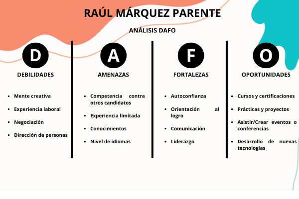

SOFT SKILLS
Habilitats interpersonals i creixement professional

Competències Claus
Aquesta anàlisi mostra el desenvolupament de les meves habilitats essencials. Aquests nivells avaluen la capacitat per adaptar-se a l'entorn laboral i personal de manera efectiva.
S'inclouen capacitats fonamentals com la comunicació assertiva, el pensament crític, la resolució de conflictes i el treball col·laboratiu en equip.
Anàlisi DAFO
L'anàlisi DAFO personal m'ha permès identificar de manera estructurada les meves Fortaleses i Oportunitats, així com reconèixer les Febleses i Amenaces per treballar-hi.
És una eina d'autoconeixement vital per traçar objectius de millora contínua en el sector tecnològic.

SMX 2n CURS
Contingut en fase de desenvolupament